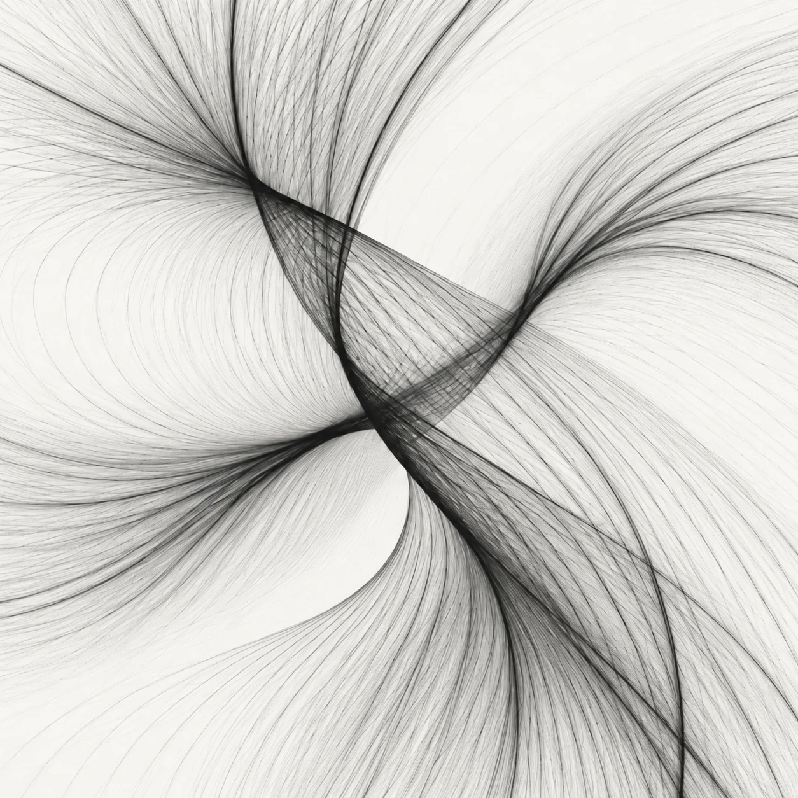

Learning that adapts
How can learning systems grow, retain useful knowledge, and adapt to something new?
Machine learning Adaptive systems
I’m Wing, a physics student at UC San Diego exploring how we understand the world — and how machines can learn from it.

01 / About
I’m Wenyu, also known as Wing. I study physics at UC San Diego, with an interest in the questions that connect physical systems, mathematics, and machine learning.
I like turning ideas into models, testing them with code, and finding out where the explanation breaks down.
02 / Research
How can learning systems grow, retain useful knowledge, and adapt to something new?
Machine learning Adaptive systems
How can we use computation to find meaningful structure in complex physical measurements?
Computational physics Scientific computing
03 / Projects
Machine learning / Physics
Evaluating particle-event classification and energy regression with NEXT detector data.
Simulation / Scientific computing
Modelling how a liquid drop bends an elastic beam with numerical solvers.
Web / Research tools
A searchable guide to UCSD faculty, labs, and public research opportunities.
Explore the code, follow along, or start a conversation.